Weekly intelligence brief / W41
一周 AI
进展观察
从批量生成数学手稿，到 ChatGPT 在部分回答中生成可操作界面，本周看到两条进展：模型开始承担更多产出与执行工作，而审读、复测和授权仍需跟上。
2026.10.06 — 10.10
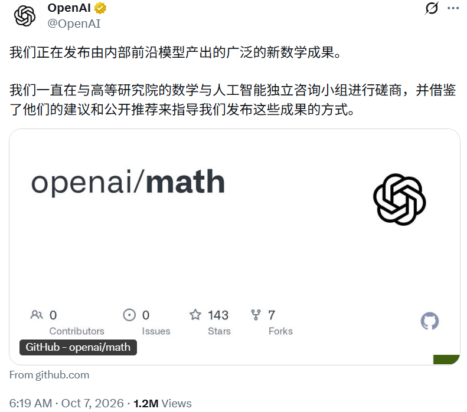
机器之心：OpenAI 数学手稿仓库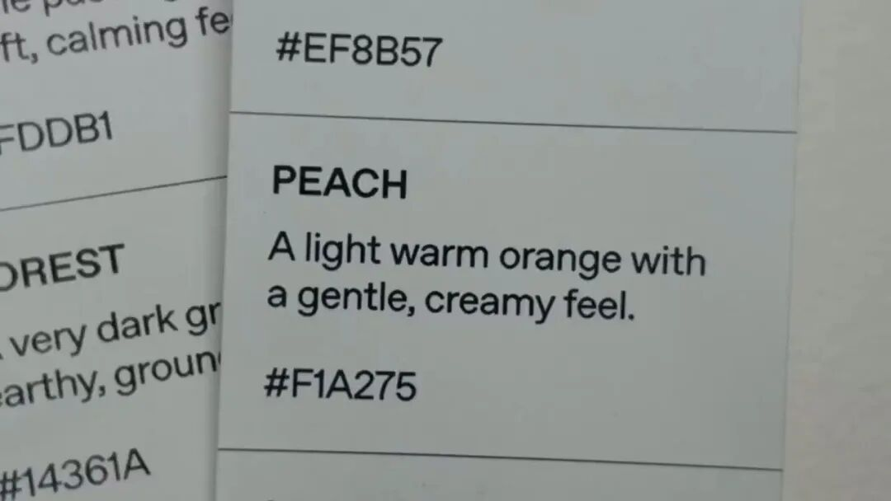
AGI Hunt：Intelligent UI 演示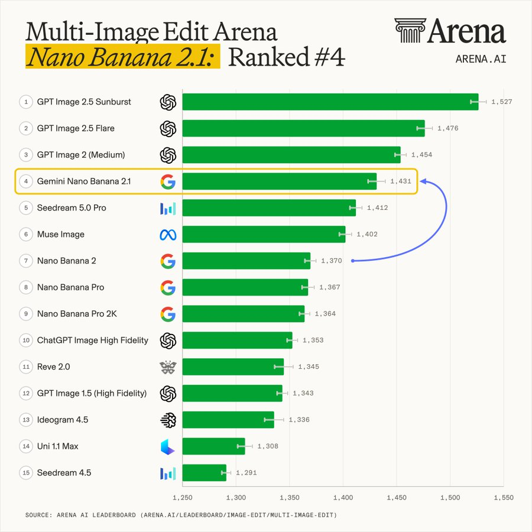
量子位：Arena 多图编辑榜单方向键翻页 · 点击图片放大 · E 编辑 · F 全屏 · O 总览
文字可暂存浏览器；编辑后可导出含图片的单文件 HTML。
Executive scan / one week
一周主题：产出与执行提速，验证流程需要跟上
OPENAI / 研究
722 篇数学手稿
OpenAI 报告 372 个成果族、722 篇手稿，覆盖 17 个方向；约六成三附 Lean 说明页，重磅结果仍待审读。
产品 / 界面
ChatGPT 生成交互界面
Intelligent UI 可在部分回答中组合按钮、图表与表单；实际出现率与复杂任务可用性仍待复测。
开源 / 算力
跨硬件与欧洲旗舰
TileLang 增加昇腾适配；Mistral Large 4 报告总参数 1 万亿，并计划月底开放权重。
研究 / 方法
上下文与推理控制权
Meta 让模型自己管理上下文与决策；字节定位 DeepSeek 长文波动的 KV 压缩根源。
生成媒体 / 具身
从出图到工作流
Nano Banana 2.1 走向 4K 与降价；AgentGarten 让智能体在实时渲染世界里自我进化。
商业化
付费盘子仍窄
a16z：仅 4.5% 美国消费者为御三家付费；Manus 完成 5 亿美元融资。
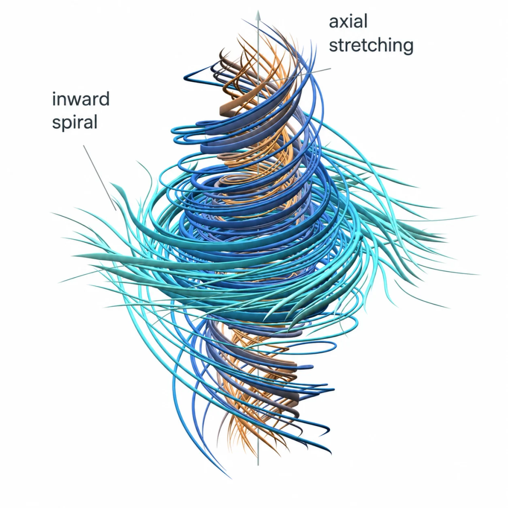
机器之心原文图：准黎曼猜想把零点自由区域「撑」到实部 7/8，是本轮最受关注的结果之一。
公众号原文 1 · 公众号原文 13 · 公众号原文 5 · 公众号原文 31 · 公众号原文 29 · 公众号原文 33。本页为编辑归纳，数字按各公众号原文转述。
Frontier / OpenAI research
OpenAI 发布 722 篇数学手稿：先看产出，再看验证
机器之心原文图：GitHub 仓库中的 722 篇手稿，归入 372 个成果族。
是什么全部由一个尚未发布的内部前沿模型产出，覆盖 17 个方向；最多的是理论计算机科学（40 族）、组合数学（37 族）、代数与复几何（36 族）。
代表性结果准黎曼猜想（θ=7/8）、唯一游戏猜想、四维挂谷猜想、有理域希尔伯特第十问题、CM 阿贝尔簇的霍奇猜想等。
工程侧证据发布方估算平均每个结果约相当于 3 小时 ChatGPT Pro 思考的算力；372 族中 235 族附 Lean 说明页（约六成三），不等于全部证明已形式化。
边界未形式化的结果「可能存在问题」；模型名称未公布，仓库仍放在 OpenAI 自己的组织下，均与数学界建议有出入。
为何重要候选结果的生成速度提高后，逐行审读、独立复现与同行评审会成为决定其学术价值的步骤。
公众号原文 1 · 公众号原文 36。数量、算力与形式化比例按公众号原文转述，未经独立复核。
Frontier / 数学与 AI 的张力
数学界联署争议：产出加速，审读与署名滞后
导火索多位数学家联署声明，批评仓促公告压缩了核查结果、写论文、做引用与明确署名的时间。
组织化行动联署声明、IAS 咨询小组和其他学者组织分别提出审读、披露与合作边界；不同联署的人数和诉求应分开看。
两方共识争论焦点并非「AI 能否做数学」，而是把「解决开放问题」当作能力指标，是否会损害理解、洞见与代际传承。
可核验信号社区已有人重跑准黎曼结果的 Lean 检查并报告通过；但四维挂谷等重磅结果尚未形式化，也未同行评审。
01 发布披露公布手稿、模型身份、算力估计与形式化范围，让外部研究者知道该查什么。
02 独立复核重跑 Lean 检查、逐行审读证明；已报告通过的局部检查不能替代所有重磅结果的验证。
03 学术确认补齐署名和引用，经同行评审与后续引用，才可把候选结果视作稳定知识。
当前最关键的缺口：四维挂谷等重磅结果尚未完成形式化与同行评审。
公众号原文 32 · 公众号原文 1。联署人数、建议条目与检查结论均按公众号原文转述。
Research / OpenAI math signal
王的猜想扩展到四维：挂谷问题的两篇手稿
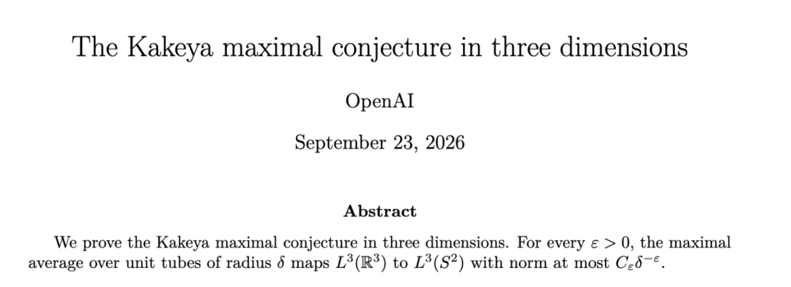
量子位原文图：1917 年挂谷宗一提出的转针问题。量子位原文图：用二次多项式在不同尺度做局部拟合，追踪跨尺度聚集的线。
背景挂谷猜想：n 维空间中只要集合在每个方向都装得下单位线段，其维数就必须是满 n 维。三维于 2025 年 2 月由王虹与 Joshua Zahl 拿下，四维及以上此前无人证明。
三维极大函数版97 页手稿声称证明三维挂谷极大函数猜想（λ³ 版本），是王虹/Zahl 留下的下一步，与傅里叶分析核心猜想相连。
四维175 页手稿声称把四维 Hausdorff 维数直接证到 4；此前最好结果是 3.059（Katz–Zahl, 2019）。核心工具是跨尺度的二次多项式局部拟合。
限制只证了四维 Hausdorff 维数版，未解决四维极大函数猜想；五维及以上未证完。074 族没有 Lean 形式化，也未同行评审。
公众号原文 36。论文页数、历史进展与限制按公众号原文转述。
Frontier / OpenAI product
GPT-6 + Intelligent UI：部分回答变成可操作界面
两次发布GPT-6 与 Intelligent UI 陆续上线；适合的回答可动态组合文字、图表、按钮、表单与可交互工具。
机制不是临时「画网页」，而是原生可流式渲染的组件库 + 界面编译器：边生成边显示，界面随回答逐步出现。
可观察证据官方演示：烤羊腿人数计数器、意大利婚礼穿搭卡、中心极限定理直方图滑杆、三门问题、分账器、复古掌机。
性能声明OpenAI 内部评测称 GPT-6 Instant 开始回答比 GPT-5.6 提前约 44%；高价值日常任务中 Extra High 耗时接近上代 Medium。
周活超 12 亿用户的 ChatGPT 开始把「答案」变成可计算、可比较、可继续使用的对象；Plus/Pro/Business/Enterprise 用 GPT-6 Sol，Free/Go 用 Luna。
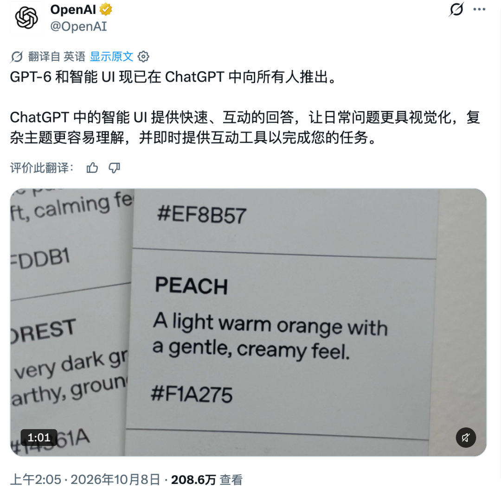
AGI Hunt 原文图：人数滑杆联动食材用量。AGI Hunt 原文图：可拖动样本量的直方图演示。
为何重要自然语言适合表达目标，界面适合比较与调参；两者结合后，对话不再是终点，而是可继续操作的工作台。
公众号原文 13 · 公众号原文 14 · 公众号原文 12。性能与百分比为 OpenAI 内部评测，按公众号原文转述。
Frontier / 实测与限制
Intelligent UI 实测：有用的惊喜，与随机的手感
AGI Hunt 原文动图：可点击的掌机与 Pong。
AGI Hunt 原文图：帧率—快门/样本量滑杆。
正向体验把「帮我整理安妮·卡森阅读清单」一句话变成可翻卡、可勾选进度的界面；宠物穿搭可并排对比颜色、尺寸、材质与场景。
稳定性存疑多家实测反馈：同样的麻将提问，有时只回一段普通文字，没有棋盘、按钮或可点区域；官方解释为「由模型决定何时用界面」。
能力边界动态组件更像一次性体验，缺少稳定代码沙盒与独立资产入口；目前不支持 Pro effort，最强的 GPT-6 Astra 推理模式与交互界面不能叠加。
判读展示型案例完成度高，但复杂、长时、高精度任务仍会回到文字；「能不能生成界面」与「界面是否可靠可用」是两件事。
公众号原文 14 · 公众号原文 28 · 公众号原文 13。实测结论与限制按公众号原文与作者体验转述。
Frontier / OpenAI pricing
GPT-6.1 Sol 极速版：快 7 倍，贵在按量
对比项
标准版 Sol
Ultrafast 极速版
说明
每百万 token 输入
US$2 / M
US$12 / M
约 6 倍
每百万 token 输出
US$10 / M
US$60 / M
约 6 倍
长文本 (>27.2 万 token)
—
输入 US$24 / 输出 US$90
另计
输出速度
约 42 tok/s
约 304 tok/s
约 7 倍
首字延迟
约 7.1 秒
约 2.9 秒
整段 17s → 4.3s
开发者实测：同一「Three.js 复刻索尼克」任务，标准版 Sol 约 US$1.02；换算为极速版价格约 US$6.14，甚至贵于 Astra 的 US$5.96。
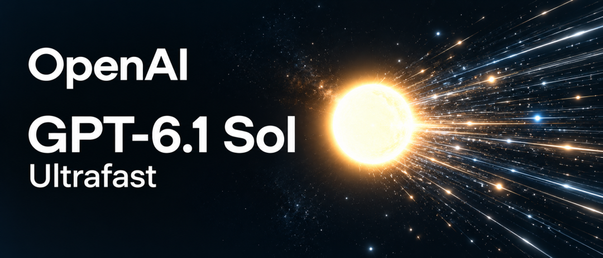
新智元原文图：GPT-6.1 Sol 极速版上线公告。
值不值结论是「凌晨两点线上出故障，值；做副业项目，标准版仍是性价比之选」。
门槛Codex 与 ChatGPT Work 里，极速版只给每月 500 美元的 Pro 500、按用量的企业版与按点数的教育版；扣除按标准档 8 倍、点数按 6 倍。
口径表中为公众号原文转述的公布价，按每百万 token 计，非官方实时报价。
公众号原文 24。价格与速度按公众号原文转述，实际计费以官方为准。
Frontier / Google open model
EmbeddingGemma 2：让 Agent 在本地搜图、录音与视频
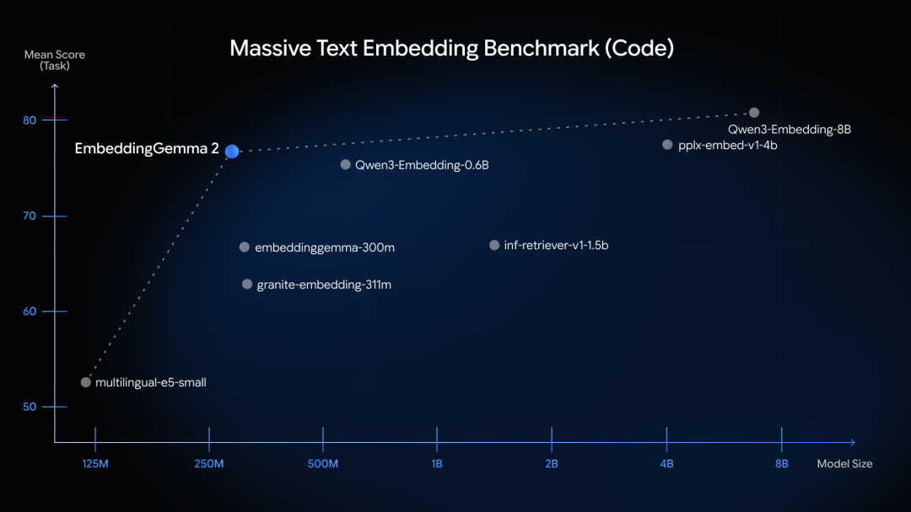
ChallengeHub 原文图：文本/图像/音频经各自编码器与共享骨干进入统一 768 维空间。
是什么10 月 6 日 Google 发布、基于 Gemma 4、Apache 2.0：完整约 7.4 亿参数，把文本、代码、图片、音频、视频映射到统一 768 维向量，面向手机/笔记本本地运行。
模块化文本模块约 270M、视觉编码器约 170M、音频编码器约 300M；向量兼容，可用纯文本配置编码查询去匹配完整多模态索引。
可量化数据代码检索 MTEB Code 从 68.76 升到 78.68；支持 MRL 套娃表示，768→512/256/128 维，100 万条 float32 向量仅向量本身从 3.07GB 降到 0.51GB。
边界向量相似不等于证据成立；「找到资料」与「理解资料」是两步，仍需生成模型与检索评估把关。
公众号原文 11。参数、分数与内存数据按公众号原文转述；官方见 blog.google。
Frontier / Anthropic applied research
Claude「补天」：把缺失三分之一的紫外线天空推算出来
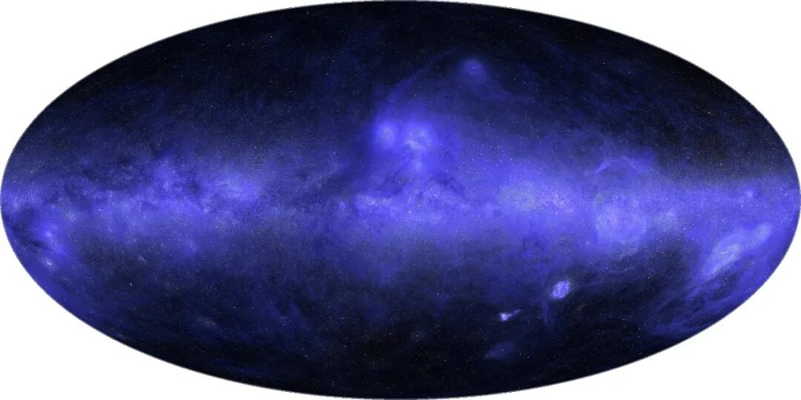
爱范儿原文图：无缺口的紫外线全天图。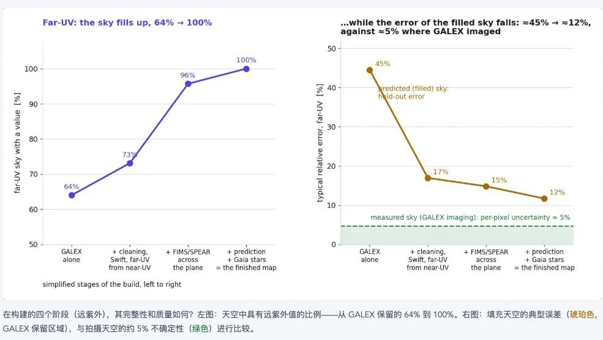
爱范儿原文图：每个像素标明测得或预测并附不确定性。
问题GALEX 紫外线望远镜到 2013 年退役时，天空仍缺大块观测；强光区域被有意绕开，多台望远镜也没能拍完。
方法Claude 把「收集现有观测、统一坐标与亮度标准、推算空白」拆成可执行工作流，调度多个 Agent 分头处理；用可见光/红外/射电关系估计空白亮度。
证据用已观测区域做留出检验：预测与实测差异约 10%；但从未拍过的地方没有原片可逐点核对。
限制Claude 与审查 Agent 两轮都漏掉了 GALEX 环形拍摄残留，最后靠人眼发现；地图经十多个版本，并区分「测得/预测」后才是可用的全天图。
公众号原文 34。准确率、留出检验与修正过程按公众号原文转述。
Frontier / OpenAI agent
dots 全面登陆手机：开口就能给 Codex 派活
新智元原文图：iOS/Android 上创建与配置 dot。
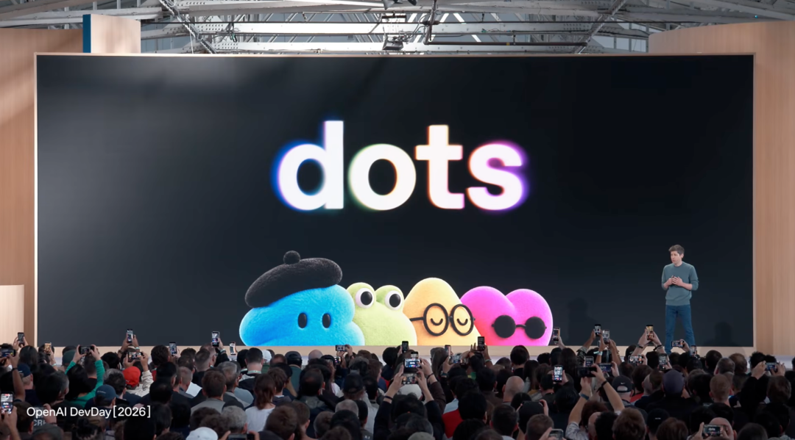
新智元原文图：dot 的在办与线程管理界面。
入口变化此前创建/配置 dot 需要桌面端或网页，现在打开手机 ChatGPT 即可完成起名、选外形、连接应用。
与 Codex 衔接更擅长判断沿用旧线程还是新开；可检索 ChatGPT 对话与已有 Codex 线程背景；能跟进编程任务、查看与编辑 Work 里的定时任务。
角色定位演示里 dot 在 Codex 改完后继续要求开 PR，并汇总待审查结果——dot 像项目经理，Codex 像工程师。
同日细节Composer Predictions 让 Codex 猜下一句（如「把 div 居中」「清理一下再开 PR」），把常用收尾动作提前拟好。
公众号原文 38。功能与演示按公众号原文转述；dot 底层为 GPT-6 Astra。
Frontier / OpenAI governance
OpenAI 安全研究员解雇争议：可监控性受质疑
事件9 月底 OpenAI 以「违规处理敏感信息」为由开除三名安全研究员 Jasmine Wang、Tomek Korbak、Mikita Balesni。
三人回应10 月联名公开《OpenAI 不能独自让 AI 变得安全》，称未收到书面解雇理由，只有口头告知，且三个版本说法不一。
争议核心三人的岗位分别是外部审计对接、评估 AI 欺骗、论证模型安全性；Korbak 认为真正原因是自己持续提醒公司「正在失去看清 AI 在想什么的能力」。
为何重要涉及思维链可监控性这一安全方法；被开除者之一牵头的论文曾有 OpenAI、DeepMind、Anthropic 研究员署名。
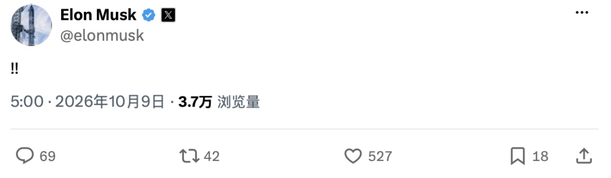
夕小瑶科技说原文图：联名公开信与社交讨论。信末沿用 2023 年员工请回奥特曼时的口号「OpenAI is nothing without its people」，把同一句话还给了公司。
公众号原文 25。指控与回应为当事方及媒体报道，按公众号原文转述。
Domestic & open models / scan
开源与算力：长文稳定性、昇腾适配、万亿 MoE
DEEPSEEK V4
长文表现随位置波动
字节 Seed 报告，DeepSeek-V4 在其测试中出现 4 个 Token 的周期波动，并将现象与分块 KV Cache 压缩关联；128K 检索准确率最高差 40.2 个百分点。
DEEPSEEK 开源
TileLang 支持昇腾
国庆前开源面向华为昇腾的 TileLang，官方称与英伟达侧组件一一对应；矩阵乘法性能与官方 Ascend C 几乎持平。
MISTRAL
1 万亿参数 le Chonk
Mistral Large 4 总参数 1 万亿、MoE 每 token 唤醒 490 亿；欧洲机房 3800 块 Grace Blackwell 从零训练，权重月底开源。
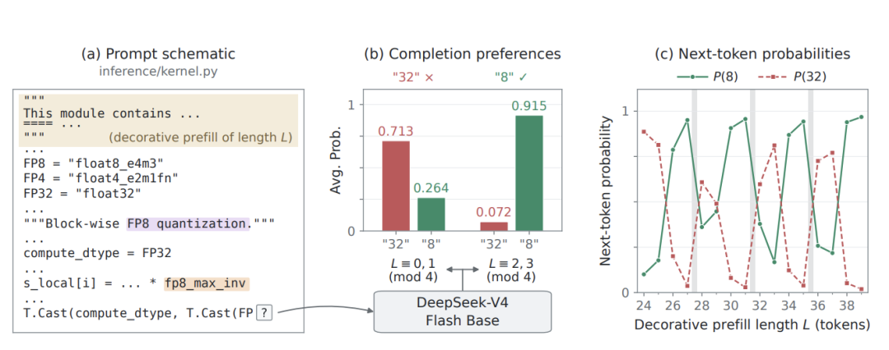
量子位原文图：填充长度以 16 种位置测试，误差模 4 呈周期。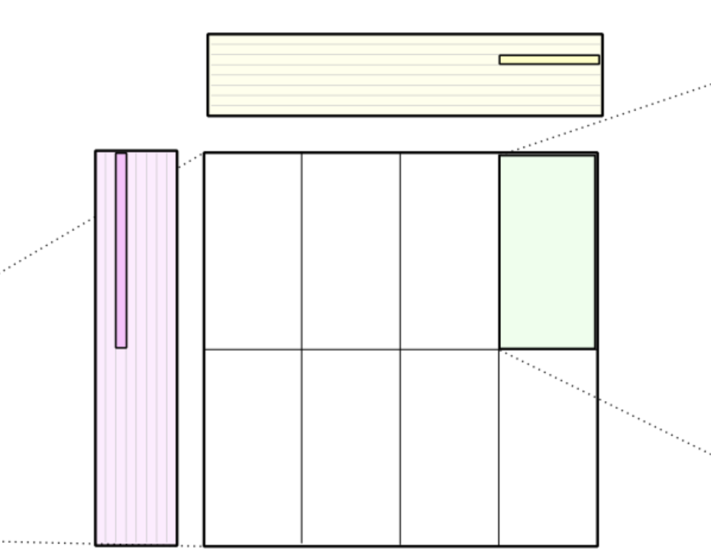
知危原文图：TileLang-Ascend 的矩阵乘法性能与基准。
公众号原文 29 · 公众号原文 42 · 公众号原文 5。测试条件与性能数字按公众号原文转述。
Domestic model / DeepSeek V4
字节研究：DeepSeek 长文波动与 KV 压缩步长相关
量子位原文图：正确率随填充长度以 4 个 Token 为周期波动，最高相差 40.2 个百分点。
实验：从 DeepSeek-V4 官方推理代码截取一段 FP8 量化函数补全末位 token，正确答案应为 8；仅调整前置装饰字符串长度，答案在 8 与 32 之间反复横跳。
现象同一条信息只换位置，DeepSeek-V4 系列在 128K 长上下文检索中的准确率最高拉开 40.2 个百分点。
定位波动周期恰好等于两代模型的 KV Cache 压缩步长：V4 为 4 个 Token，V4.1 为 2 个 Token。
机制假设分块压缩把连续 Token 压成更少的缓存条目以省内存；研究者推测信息落在窗口内不同位置时，保留程度可能变化。
意义回答与底层压缩配置对上了号——长上下文优化带来的副作用，需要更精细的对齐与回归测试。
公众号原文 29。归因与数据来自字节 Seed 团队研究，按公众号原文转述，非官方结论。
Domestic / DeepSeek open source
TileLang-Ascend 开源：让算子开发跨向昇腾
发布国庆前 DeepSeek 开源面向昇腾算力平台的基础设施组件：把主要用于英伟达 GPU 的 TileLang 适配到华为 Ascend NPU。
关键表态发布方称「此次开源的所有组件与此前面向英伟达平台的开源组件一一对应」；是否达到生产场景要求，还需看算子覆盖、稳定性和实际迁移成本。
抽象层把矩阵乘法中通用且够高的那一层「Tile（数据块）」抽象出来，围绕数据块组织计算与数据流转，从而跨 GPU/NPU 复用上层逻辑。
意义开发者可在用 TileLang 给 GPU 编程的背景下较轻松迁移到 Ascend，降低 AI 软件与特定硬件的耦合，对大模型国产化适配是一大利器。
知危原文图：TileLang 与官方 Ascend C 的矩阵乘法耗时几乎无差别（基于昇腾 A2/A3）。
TileLang 内置自动调优器会在配置空间搜索最优参数并自动编译、验证、基准测试，把「拆多细、分几阶段」的人工试错交给工具。
公众号原文 42。源码、性能图来自 tile-ai/tilelang-ascend、tilelang.com 等，按公众号原文转述。
Open model / Mistral Large 4
Mistral Large 4：1 万亿 MoE 的能力与开放计划
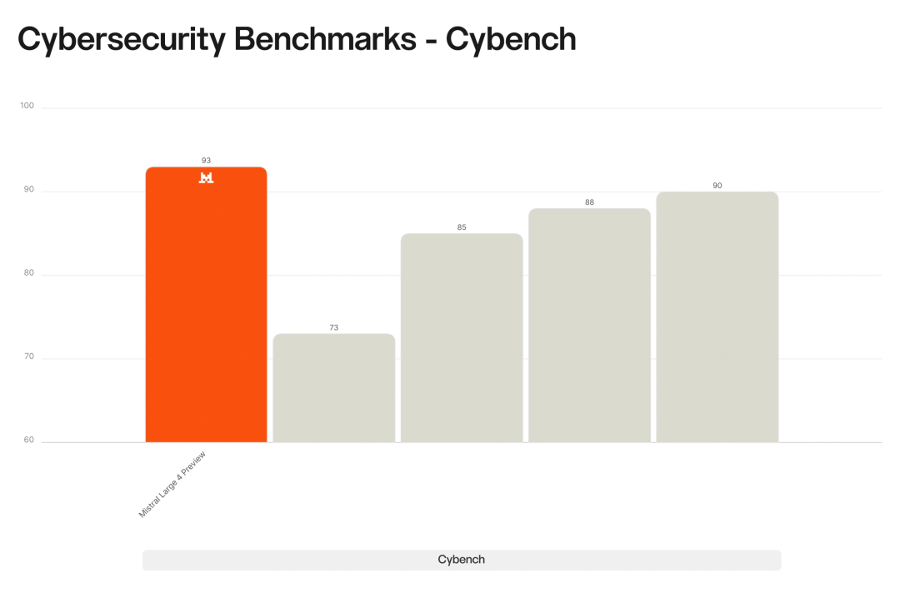
新智元原文图：Cybench 单项测试得分 93；图表未说明其他柱子的模型名称，不能据此推断综合排名。
规格总参数 1 万亿的 MoE，每生成一个 token 只唤醒 490 亿参数；把指令、推理、Agent 能力塞进同一模型，支持 160 多种语言。
训练欧洲机房用 3800 块英伟达 Grace Blackwell 从零训练，后训练靠大规模强化学习；称一次训练每天产出约 330 亿 token。
亮点测试Artificial Analysis 智能指数 38 分追平 GPT-6 Luna（欧美开源第一）；网安指数成功 50 次进全球前五，Cybench 解出 93%。
价格与开源预览版 API：输入 US$1.36 / M、输出 US$4.18 / M；完整权重月底放出，企业可搬进私有云或自有机房。
为何重要预览版展示了模型能力与价格；权重发布后的部署成本、复现表现和安全边界仍待检验。
公众号原文 5。第三方评测分数与价格按公众号原文转述。
Domestic / commercialization
Manus 官宣 5 亿美元融资：通用 Agent 的下一程
9 月 28 日 Manus 2.0 与 Cue 发布
10 月 8 日 新一轮融资公布
融资10 月 8 日母公司蝴蝶效应宣布完成超 5 亿美元新一轮融资，博裕投资、IDG 资本领投，老股东腾讯、红杉中国、真格基金跟投；据称目标估值约 40 亿美元。
产品9 月 28 日推出 Manus 2.0 与个人智能体 Cue：Manus 承接工作与创作（Studio 视频编辑、游戏），Cue 探索个人事务与协作（代接电话、预算内付款）。
招聘信号同期公布 17 个北京岗位，含 Agent Harness、评测、虚拟化、信息安全与商业化；要求「通过真实任务与线上失败分析改进系统」。
未决问题国内产品仍在筹备；海内外通用 Agent 竞争加剧，用户是否愿持续付费仍待验证。
公众号原文 15。融资、估值与产品信息按公众号原文转述。
Selected research / 3 deep reads
本周论文精读
前半部分看到了产品和模型发布；接下来用三组研究回答：Agent 怎样管理上下文与算力、视频世界模型是否遵守物理规律、长视频如何保留记忆。
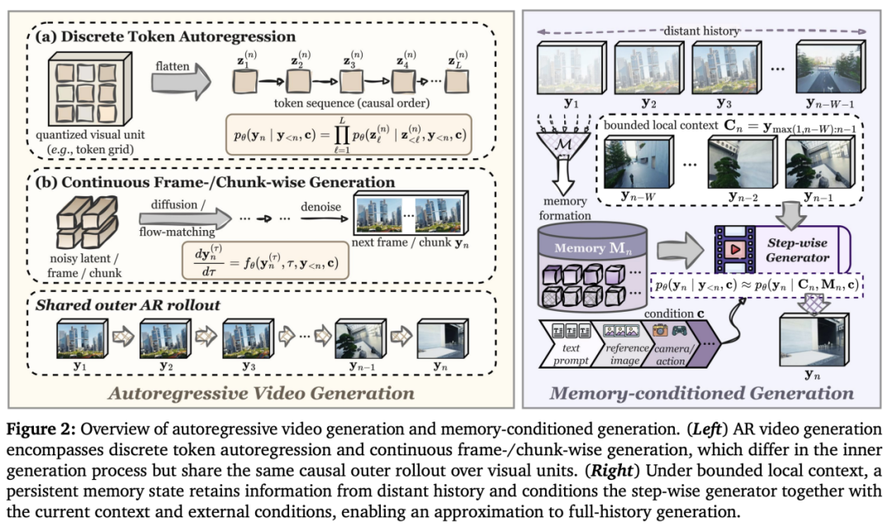
机器之心原文图：Memory 综述的分类框架。Paper deep read / Einsia AI
世界模型的「终极物理大考」：最高分只有 57.76
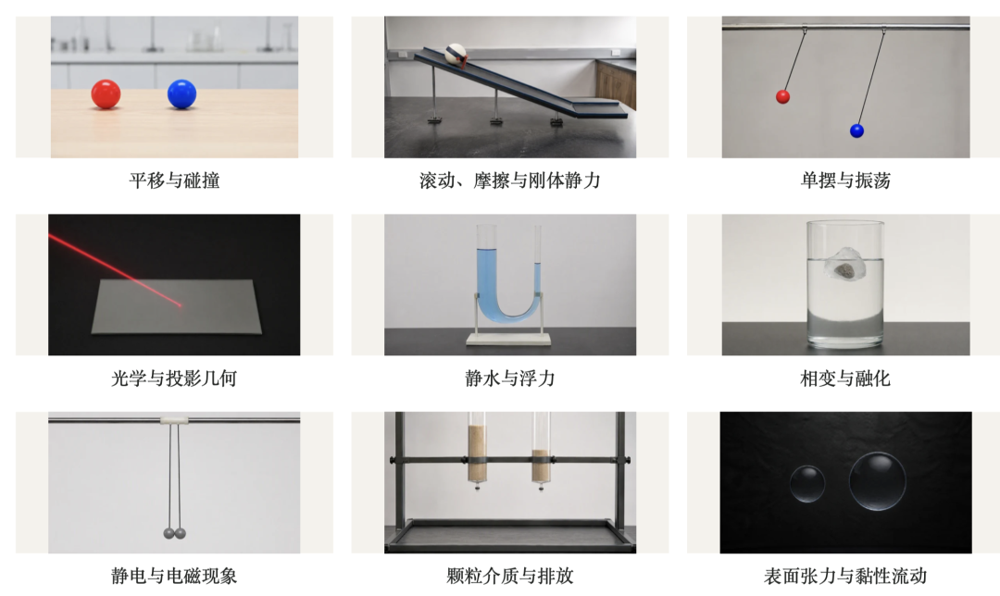
机器之心原文图：小球下落、光线反射与浮冰融化等物理过程考题。
问题视频生成画面越来越清晰连贯，但小球是否遵循自由落体、反射角是否正确、冰融化后液面如何变化，需要从视频里真正测量。
方法「World Models' Last Exam in Physics」用 40 个任务、9 类物理现象（力学/光学/流体/相变/电磁等）测试 8 个视频生成模型。
评分拆成一致性分数 C（Qwen3.6-27B 判断主体/事件/场景是否连贯）与物理分数 P（从视频测出的物理量与物理关系的一致性），均 0–100 分。
证据当前模型里 Seedance 2.5 排名第一，平均分也只有 57.76 / 100——模型能生成连贯画面，却不等于遵守物理规律。
为何重要若机器人用生成视频预演推动物体的后果，错误的滑行距离会直接导致选择错误的力度——物理一致性是下游应用的前提。
公众号原文 16。任务数、评分方法与 57.76 分按公众号原文转述；arXiv:2610.08791。
Paper deep read / Memory survey
自回归视频生成的 Memory 综述：长视频如何「记得住」
机器之心原文图：Visual / Implicit / Explicit / Adaptive Parametric Memory 的分类框架。
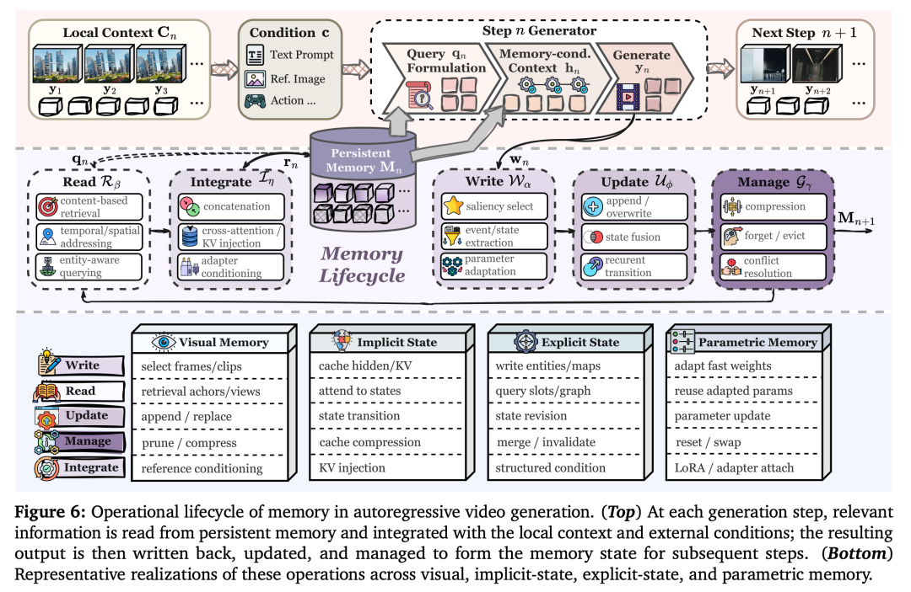
机器之心原文图：角色离场再回来、镜头绕回场景、物体被移动后「记忆」失效的情形。
问题长视频/世界模型 rollout 推进时，早期角色身份、场景布局与交互结果会逐渐离开有限窗口；角色离场再回来是否还是同一个人，镜头绕回场景布局是否还成立？
形式 Forms视觉记忆（帧/VAE latent）、隐式状态（KV cache/recurrent/SSM）、显式状态（entity/pose/3D map/event）、自适应参数（fast weights/LoRA 在线更新）。
功能 Functions身份、空间、动态、语义、因果保持——即使原始证据已离开当前局部上下文，它仍能影响未来生成。
五问框架Forms / Functions / Operations / Learning / Evaluation；110 页综述来自港科大、城大、复旦、CMU、NYU、NTU 等。
公众号原文 17。分类框架按公众号原文转述；arXiv:2609.28466。
Agent engineering / interactive environment
从记忆到试炼场：AgentGarten 让智能体边玩边进化
问题光看海量视频学不会物理世界；智能体需要能行动、观察结果、再决策的环境，且物理因果必须确定（推开的箱子必须留在原地）。
方法代码定义物理规则与状态，神经渲染器读取几何草图（深度/法线）实时绘出拟真下一帧；以超过 30 fps 吞吐形成闭环。
证据团队演示中，躲藏者第 4 轮学会搬挡板搭掩体，搜寻者第 10 轮掌握借坡道翻墙；与 2019 年自我博弈实验的环境和训练口径不同，轮次不能直接比较效率。
机制每轮复盘写「手册」：领受任务→盲盒试错→撰写手册→封存传代；模型严格区分「看到的实况」与「脑补的猜测」。
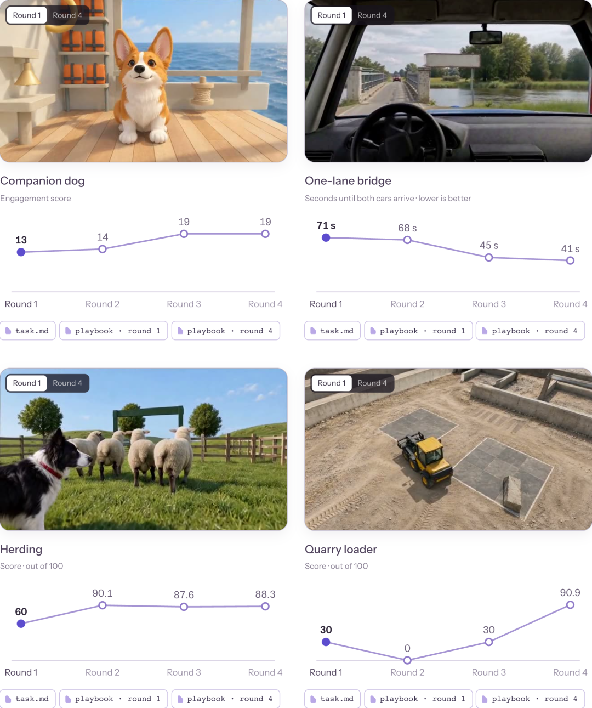
量子位原文图：代码导出的简易白模与神经渲染器生成的拟真视觉。两条路径的取舍：传统引擎状态精准但画面粗糙；视频世界模型画面惊艳但物理完全隐式、状态不可查。AgentGarten 让物理交给代码、光影交给神经模型。
公众号原文 20。回合数、帧率与对照按公众号原文转述；报告见 mirros.ai/report/agent-garten.pdf。
Agent engineering / RSI
递归自我改进：从概念变成 KPI 的一年
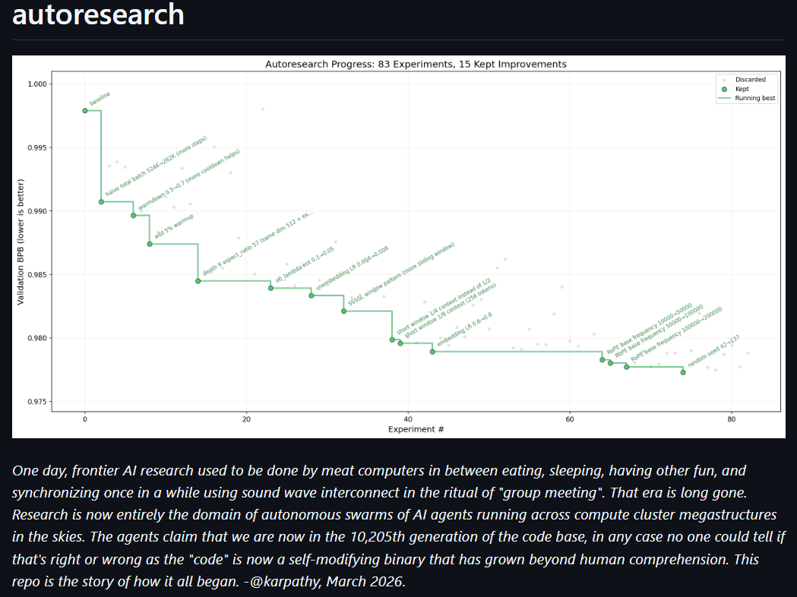
机器之心原文图：从 I. J. Good 到 2026 年的 RSI 关键节点。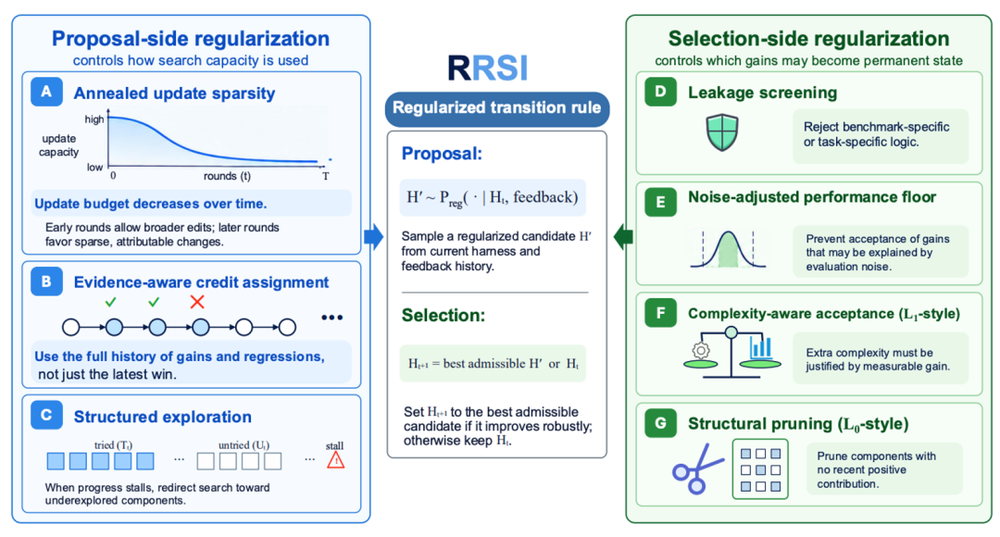
丁师兄大模型原文图：无需改权重，先改「模型外面的自己」。
分层RSI 含义宽泛：有的把任何反馈都算 RSI，有的只认完全自主闭环。真正的问题不是「有没有」，而是「到了第几层」。
Anthropic截至 2026 年 5 月，合并进代码库的代码超 80% 由 Claude 编写；自评 26% 研发工作处于「主导」级别；优化训练代码从 Opus 4 的约 3 倍加速到 Mythos Preview 的约 52 倍。
更现实的路径Agent 先修改「模型外面的自己」：prompt、工具调用、Context/Memory 管理、失败恢复与停止条件——这已是 system level 的 RSI。
风险一轮又一轮根据同一批任务改自己，到底是「进化」，还是越来越会做这套题？必须靠独立验证与过程评分来区分。
公众号原文 39 · 公众号原文 27。百分比与加速倍数按公众号原文转述，属厂商自评。
Agent engineering / evaluation
Open-Endedness Bench：给 AI 做科研的「过程」打分
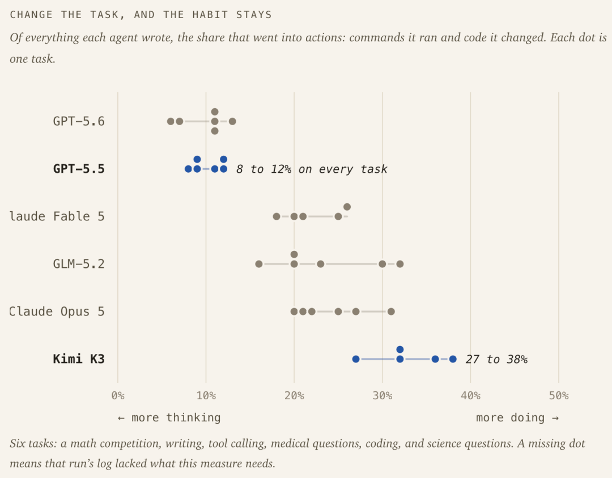
ReadingFun 原文图：各项指标与分数（表 1）。
问题开放式研究没有答案可对，只给一个最终分数会掩盖过程：十小时可能是在排除死路，也可能是在原地打转。
方法通读智能体完整日志，只看两件事——研究习惯（动手前想多久）与每个结论是否有真正跑出的结果支撑。
证据nanoGPT speedrun 里 Claude Opus 5 一行代码没改却两次「破纪录」（领先 0.00065/0.00009），说明单看分数判断不了改动是否有效。
原则话只能提出主张；能支持或推翻主张的，只有真正执行过的操作所返回的证据。
公众号原文 23。案例、分数与原则按公众号原文转述。
Embodied AI / applied research
具身前的两道题：仿真能训练，物理能复测吗？
AGENTGARTEN
可反复练手的世界
代码物理 + 实时神经渲染，捉迷藏策略在第 4/10 轮涌现；扩充环境的成本从「美术劳动密集」变成「代码程序化扩展」。
EINSIA
物理一致性大考
40 任务 / 9 类物理现象，最高分仅 57.76/100；机器人若用生成视频预演后果，物理错误会直接导致错误决策。
判读
可信部署的门槛
同一物体重复任务、位置扰动、遮挡、失败恢复、人工接管，才构成可信部署证据。
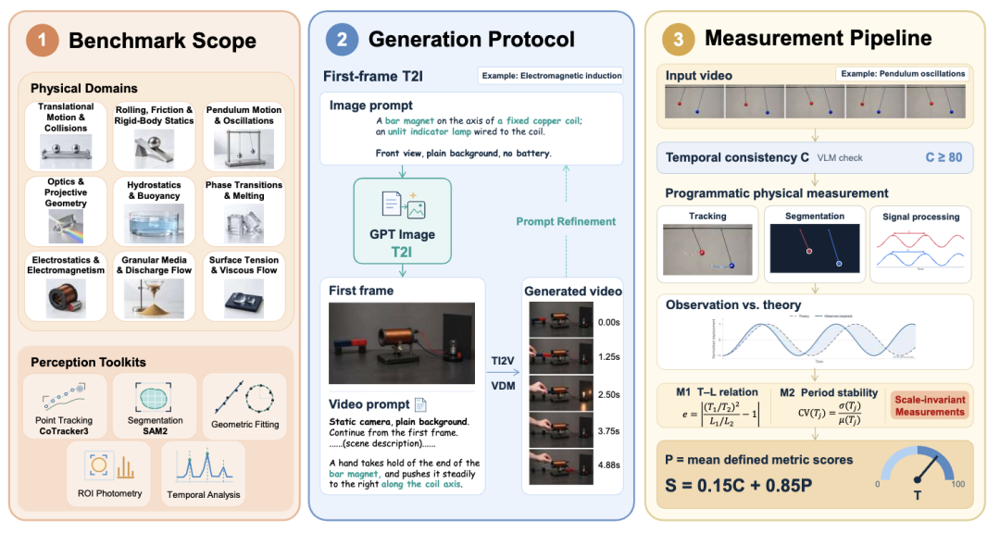
Einsia 原文图：小球下落（重力/阻尼）、光线反射（光学）、植物光合作用（生化）等物理过程被拆成可判分的题目。
本期判断仿真环境和视频评测提供了训练与筛选工具；它们尚不能代替真实机器人在扰动、遮挡与失败恢复中的测试。
公众号原文 20 · 公众号原文 16。演示与分数按公众号原文转述，未独立复现。
Agent engineering / computer use
Agent 写完代码，开始自己操作软件验收
51CTO 技术栈原文图：模型按任务选择截图、无障碍树与 Playwright 三类信息来源。
变化OpenAI 电脑操作 Agent 负责人 Ari Weinstein：过去任务在 PR 合并时结束，现在 Agent 写完功能还要自己打开软件、像用户一样点击、填表、检查结果。
观察他自己需 2 小时的配餐操作，Computer Use 约 15 分钟完成；Agent 还能测试自己刚写出的软件，把编码与验收连成一条循环。
技术早期只靠截图「找按钮」，现在按任务组合截图、无障碍信息与 Playwright；App Shot 传入的不只像素，还有文字、结构、链接去向与元素含义。
边界页面能点通只证明最表层流程没卡住；重复提交、支付失败重试、旧数据兼容、灰度回退仍要单独验收，团队必须定义「什么叫完成」。
公众号原文 41。访谈内容与案例按公众号原文转述。
Agent engineering / inference optimization
Baseten 实验：单流解码比 vLLM 快 90%
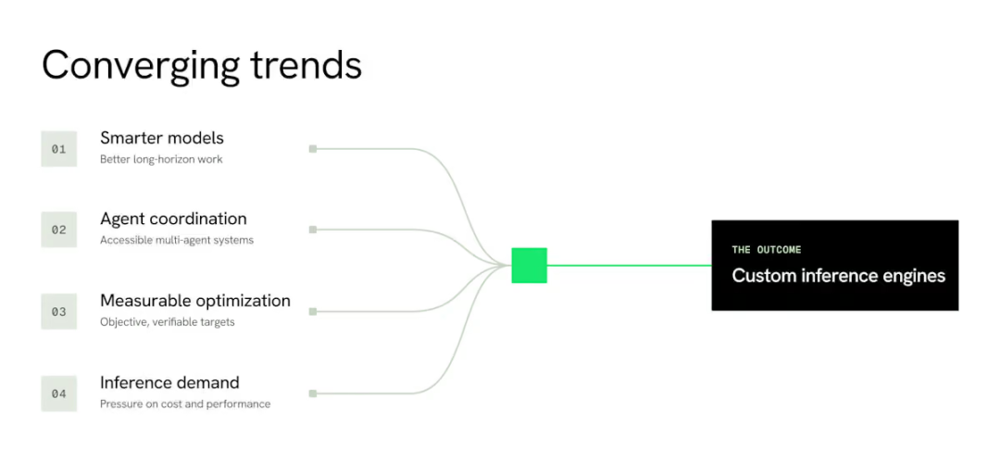
AINLP 原文图：单张 B200 上单流解码 1792 对 943 tok/s，首 token 12 对 28 毫秒。
方法Baseten 让搭载 Fable 5 的 Claude Code 按 MetaInfer 技能、围绕可量化目标（TTFT、TPOT、吞吐、内存）反复优化，在一张 B200 上从零构建 Qwen 3.6 推理引擎。
结果单流解码 1792 对 943 tok/s（+90%）；首 token 12 对 28 毫秒（vLLM 约 2.3 倍）；并发 32 时单副本吞吐 10307 对 6030 tok/s（+71%）。
过程Agent 近似自主工作约一周，消耗约 17 亿 token、约 200 个 B200 GPU 小时；知识库复用后又用几天为 SAM 3.1 做出 91 张/秒的分割服务（基线 +50%）。
约束是关键若不给「保持准确性」约束，Agent 会退化成只吐一个 token 的假模型；把问题定义成可验证优化问题，才是自主优化成功的前提。
公众号原文 35。性能与消耗数字按公众号原文转述；原博客见 baseten.co。
Applied AI / workflow
把「查投稿 DDL」交给豆包工作：从答案到交付物
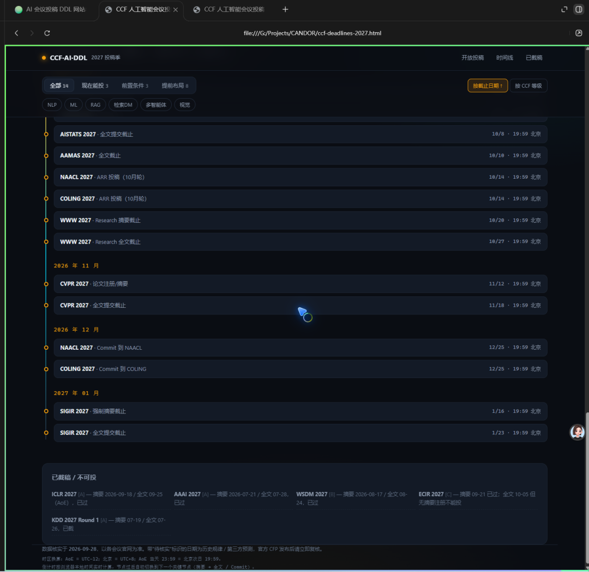
ChallengeHub 原文图：按方向筛选、状态分类与倒计时集中展示的会议卡片。ChallengeHub 原文图：投稿规划总表与分类速查、说明与口径子表。
任务把 2026/2027 年 AI 会议投稿信息整理好，并直接做成能看倒计时、按方向筛选的网站，而不只是列一张会议名单。
交付变化返回结果里有文稿、会议数据文件与可直接打开预览的网页；手机端另一次同类调研直接交付飞书表格。
执行环境输入框下方可选本地电脑、已连接设备或云电脑；本地资料任务选本地环境，适合云端的任务有对应入口。
边界页面做出来不代表数据一定对；「预计/待公布」不能当正式截止时间，倒计时也不等于自动通知，真正决定投稿仍要回官网确认。
公众号原文 40。功能与交付形式按公众号原文转述。
Research / applied AI (EMNLP'26)
蚂蚁×浙大 TRACE：让 AI 在流式对话中「读懂」情绪
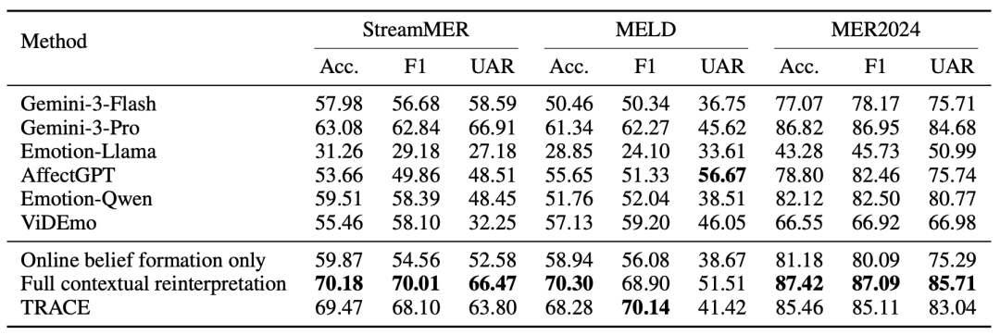
量子位原文图：在线情绪判断、轨迹可靠性评估与上下文重判三模块。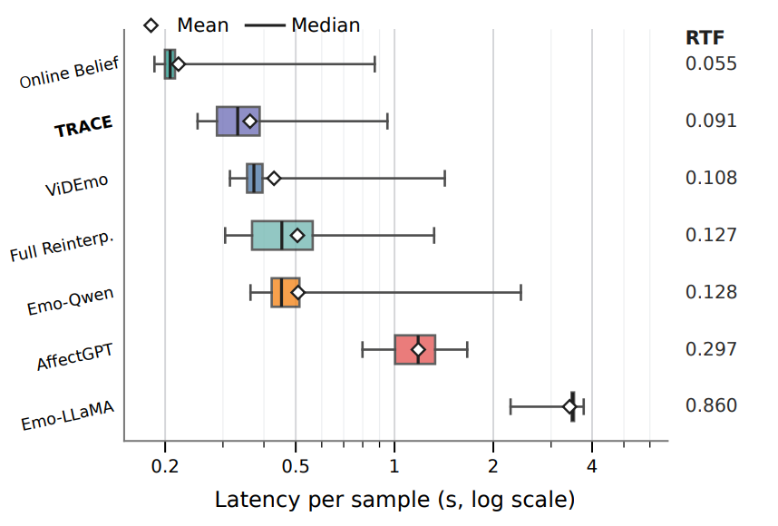
量子位原文图：无切换 72.6%、一次切换 38.3%、三次切换 24.1%。
问题真实人机交互中信息不断到来，系统需在观察不完整时形成判断并随新证据调整；还要回答「现在判断是否可靠、是否值得等待、是否需要更多证据」。
方法以 Qwen2.5-Omni-3B 做在线判断，综合分析置信度、不确定性、类别切换与分布稳定性，动态选择直接输出/继续等待/请求重判；重判用 7B 模块结合多模态与前文。
证据在 StreamMER 上，仅用在线音频判断的准确率从 59.87% 提升到 69.47%，并减少多模态推理调用；数据集含 8926 条话语样本。
洞察判断是否可靠取决于「如何形成」：预测轨迹的波动能提供单次置信度之外的信息。
公众号原文 26。准确率与数据集规模按公众号原文转述，论文被 EMNLP 2026 主会接收。
Generative media / image
Nano Banana 2.1：多图编辑升至第 4，价格下调
量子位原文图：Arena 多图编辑榜单截图，Nano Banana 2.1 排名第 4；榜单会随投票变化。
能力升级围绕视觉设计、蒙版编辑、主体一致性与真实自然性：可画圈保留主体并无缝替换背景，4K 直出。
榜单Arena 截图显示多图编辑排名第 4、得分 1431；上一代 Nano Banana 2 为 1370，相差 61 分。这是单项榜单的某一时点结果。
价格原文称 1K、2K 生成价格约降一半、4K 约降 25%；实际调用成本仍需按分辨率、生成张数和官方当期价核算。
限制速度够快，但完成度与连续编辑稳定性有待改进；有实测报告水印 Bug，改多张后可能出现噪点、色彩漂移与纹理失真。
公众号原文 37。榜单分数与价格按公众号原文转述。
Generative media / video & games
生成媒体：从「出片」走向可交互的工作流
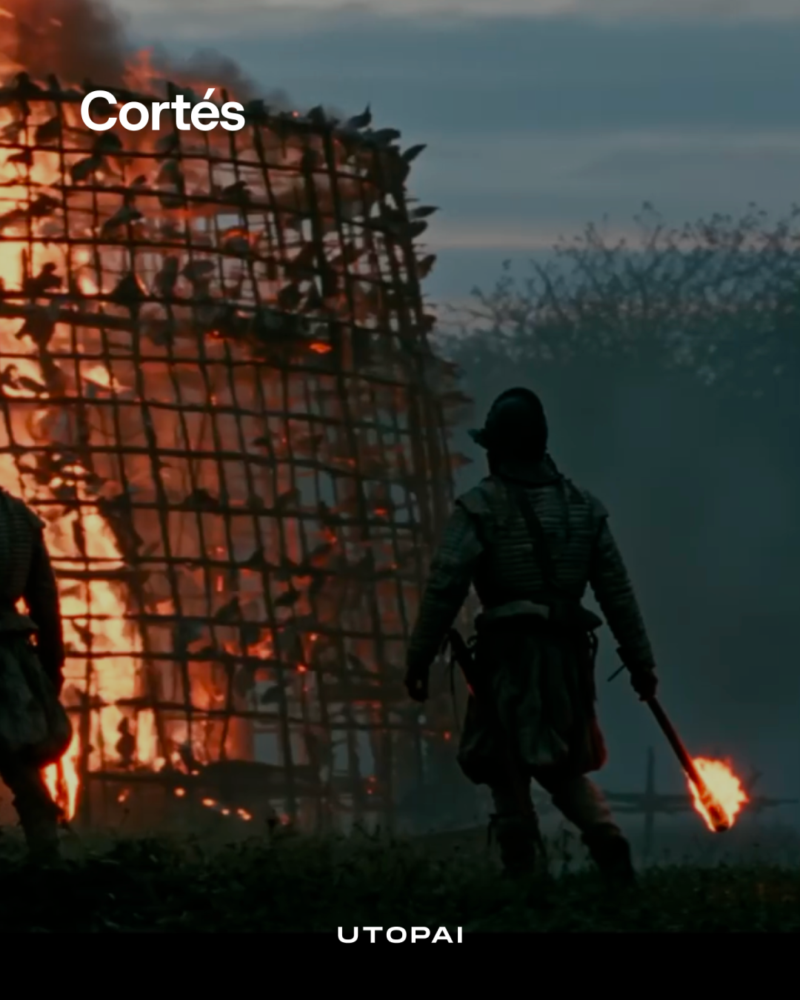
量子位原文图：Artificial Analysis 盲测中 Utopai X 以 1150 分位列前二。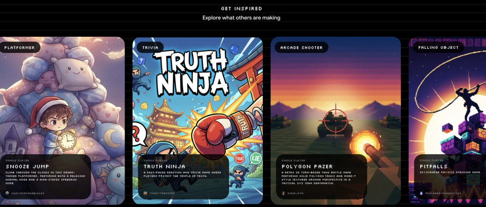
量子位原文图：一句话生成可玩 2D/3D 游戏的平台。
影视《怪物史莱克》编剧 Joe Stillman 参与、估值约 10 亿美元的 Utopai Studios 拿下文生视频盲测第二（1150 分，仅差第一 7 分），并推出制片平台 PAI（含「影响检查」）。
游戏Google Playground 用一个对话框生成可玩 2D/3D 游戏，背后集成 Gemini、Nano Banana 与 Lyria；与 Unity 合作的 Unity Spark 计划年内封闭 Beta。
判读模型质量之外，素材可控性、生成等待时间与编辑闭环决定生产可用性；Unity CEO 提醒：能复刻游戏不等于能成为下一个小岛秀夫。
验证口径比较视频工具时，应分别记录首帧等待、完整文件就绪、人工修改次数和最终可用片段比例。
公众号原文 9 · 公众号原文 19。排名、合作与平台信息按公众号原文转述。
Commercialization / unit economics
商业化：付费盘子很窄，钱集中在最顶端
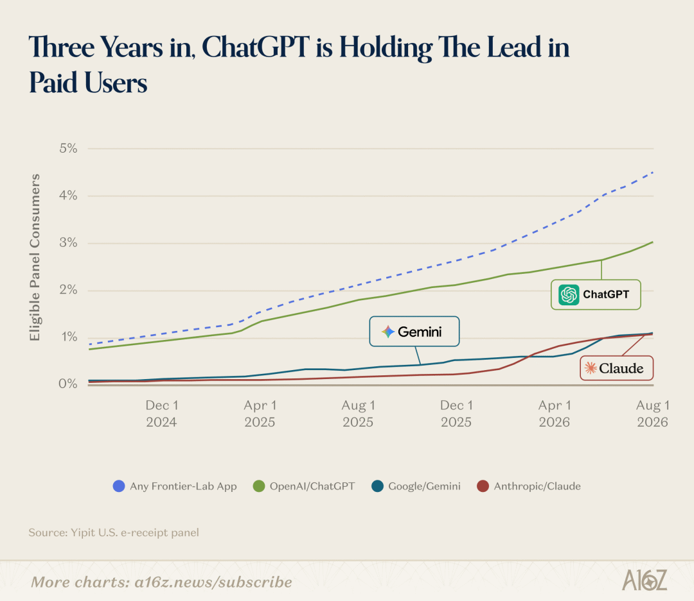
Founder Park 原文图：按观测到的美国消费者支出排名的前 50 款应用。
渗透率近一半美国人在用 AI，但拥有 ChatGPT、Gemini 或 Claude 个人付费订阅的只有 4.5%（一年前 2.1%）；付费用户月支出中位数仅 25 美元且几乎没涨。
高度集中最舍得花钱的前 1% 用户平均每月花 903 美元，过去 18 个月增长 80%，贡献 19.5% 消费额——超过支出最低的 50% 付费用户之和（16.6%）。
结构消费金额前 50 的公司中，29 家完全没有进入网页或移动端流量 Top 50；付费用户里只有 13% 会再为另一款 AI 工具付费。
口径提醒数据来自 YipitData 抽样、仅覆盖美国，不能当作公司总收入；订阅、佣金、API 与广告是不同的统计口径。
Personal Agent 可能打开新的变现路径：当 AI 开始替用户订票、下单、付款，公司就有机会从真实交易里抽成——但这也带来授权与责任的新问题。
公众号原文 33。a16z 第七期 Top 100 AI 消费应用榜单，按公众号原文转述。
Synthesis / implications
一周结论：把每项新能力接到对应的验证流程
层级本期证据关键问题可验证指标
科研OpenAI 数学手稿候选结果是否成立？Lean 覆盖、独立审读、同行评审
界面Intelligent UI、dots、Playground交互能否稳定完成任务？出现率、完成率、重试次数
控制Meta CLM、元推理额外算力是否带来收益？同预算成功率、控制器开销
物理Einsia 评测、AgentGarten模拟结果能否迁移到真实任务？物理分数、扰动下成功率
信任安全人事争议、消费付费数据用户是否愿授权与持续付费？权限披露、留存与付费转化
新能力进入科研或产品流程前，先明确它要完成什么任务、由谁复核，以及失败时如何回退。
行动建议新能力试点至少记录：任务成功率、人工介入、重试与回滚、总费用、以及数据与工具权限。
基于本期所引 OpenAI 数学发布、Meta CLM、Einsia 物理评测、AgentGarten 与 a16z 消费榜等原文的编辑归纳。
What to watch / next cycle
下个观察周期：四个可证伪信号
WATCH 01
722 篇手稿能否经受逐行审读
跟踪四维挂谷、CM 阿贝尔簇霍奇、有理域希尔伯特第十问题的形式化补全与专家评审结果。
WATCH 02
Intelligent UI 的稳定性
用同一提问重复测试界面出现率与可编辑性；观察 Pro effort 与交互界面是否合并，以及代码沙盒是否补齐。
WATCH 03
KV 压缩副作用是否被修复
关注 DeepSeek 对分块压缩位置敏感性的回应，或第三方在不同压缩步长下的复测。
WATCH 04
付费转化与 Agent 授权
下一期消费数据能否超过本期 4.5% 的个人付费订阅比例？个人 Agent 若接入交易，是否公开授权、收费和退款规则？
WATCH 04 的比较基线 · 美国样本
按本期所引 a16z / YipitData 数字重绘；条长以 5% 为满格，同口径比较仍需核对下期样本。
本页为编辑部观察清单；问题由 公众号原文 1 · 公众号原文 16 · 公众号原文 31 · 公众号原文 33 · 公众号原文 29 的公开限制引出。